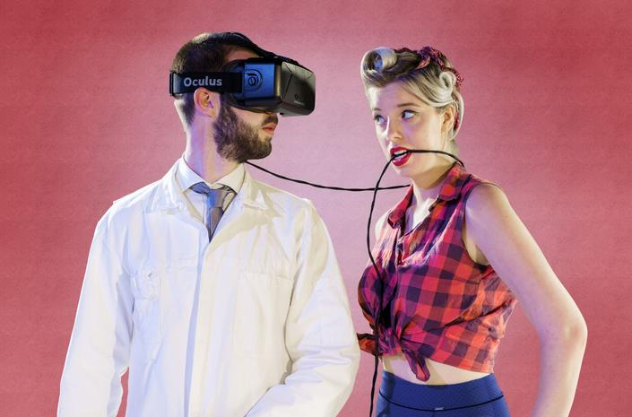
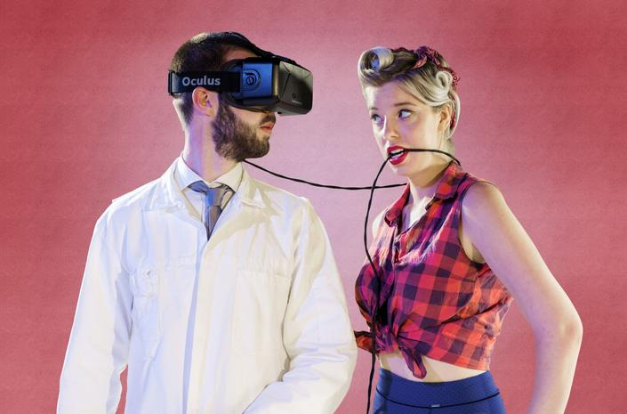

VPRO Peepshow
2015
www.vpro.nl/peepshow
crew: Ivo van Aart, Mirjam van Dijk, Steye Hallema, Mark van de Korput, Ridwan Nasruddin, Elénie Wagner, Boris van Bommel, Jilles Flinterman, Anna Keuning, Nicole Cremers, Robin van Dijk, Henk van Engelen, Mariska Schneider, Arjen Jongeneel, Brecht van Teeseling
A cross-media experience involving live theatre and virtual reality. Performed in 2015 on Lowlands festival and the Dutch Design Week.
tasks: R&D, VR-video production, data handling and technical supervision
tools: Kolor Autopano Video Pro, Adobe Premiere, Adobe After Effects
Local Projects
2014/2015
www.localprojects.com
crew: Jake Barton, Sundar Raman, Orio Ferrer Mesià, Kristen Svorka, Angela Chen, Philipp Rockel, Mark van de Korput, Kimberly Gim, Paul Hoppe
Local Projects developed multiple interactives as part of the permanent re-opening exhibiton of the Cooper Hewitt Smithsonian Design Museum in New York.
tasks: software development, interaction design
tools: OpenFrameworks
Just Like Your Mom
2015
crew: Mark van de Korput, Rene Huwae
Promo video / after movie for Just Like Your Mom vegan catering and toursupport
tasks: direction, camera, editing
Boxology
2014
crew: Mark van de Korput, Staas Kirligitsis, ...
Interactive installation school-project
tasks: concept, technical development, physical construction
tools: Arduino, Processing, Resolume Arena, Nailgun
BackSeat Sessions
2011-now
 
